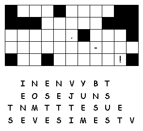

This week's lessons: Exodus
14:19-31 and [Psalm
114 or Exodus
15:1b-11, 20-21] Genesis
50:15-21 and Psalm
103:(1-7), 8-13 Romans
14:1-12 Matthew
18:21-35
Elementary
School Pew-work
C
A M E H I M S S L
|
(Matthew 18:21-22 NRSV) Then Peter came and said to him, "Lord, if another member of the church sins against me, how often should I forgive? As many as seven times?" {22} Jesus said to him, "Not seven times, but, I tell you, seventy-seven times. |
Word List |
from http://www.efree.mb.ca/lectionarypuzzles free to distribute for free with this notice. Words are in a straight line left to right or top to bottom |
||
What is Peter
asking Jesus?
_________________________________________________________________________
What does
Jesus answer?
_________________________________________________________________________
Why do we
think Jesus picked this
number?
_________________________________________________________________________
What would the
two debts be in today?s economy?
_________________________________________________________________________
Questions taken from the Episcopal Church's Lesson Plans for Small Congregations: http://www.episcopalchurch.org/50534_ENG_HTM.htm
|
 |
Try to fill in the missing numbers. Use the numbers 1 through 9 to complete the equations. Each
number is only used once. Each row is a math equation. Each column
is a math equation.Remember that multiplication and division are
performed before addition and subtraction.
|
Next
week; Exodus
16:2-15 and Psalm
105:1-6, 37-45 or Jonah
3:10-4:11 and Psalm
145:1-8 , Philippians
1:21-30 , Matthew
20:1-16
This week's lessons: Exodus
14:19-31 and [Psalm
114 or Exodus
15:1b-11, 20-21] Genesis
50:15-21 and Psalm
103:(1-7), 8-13 Romans
14:1-12 Matthew
18:21-35
Middle-School
Pew-work
70 x 7 = _______________?
Should you forgive your brother 491 times? Why or why not? _____________________________________ __________________________________________________________________________________________________________________________________________________________________________________________________________________________________________________________________________________________________________________________________________________________________________________________________________________________________________________________________________________________________________________________________________
Is Jesus saying you should forgive and forget? When might it be good, and when might it be bad, to forget about a hurt done to you? __________________________________________________________________ __________________________________________________________________________________________________________________________________________________________________________________________________________________________________________________________________________________________________________________________________________________________________________________________________________________________________________________________________________________________________________________________________________
Next week; Exodus 16:2-15 and Psalm 105:1-6, 37-45 or Jonah 3:10-4:11 and Psalm 145:1-8 , Philippians 1:21-30 , Matthew 20:1-16